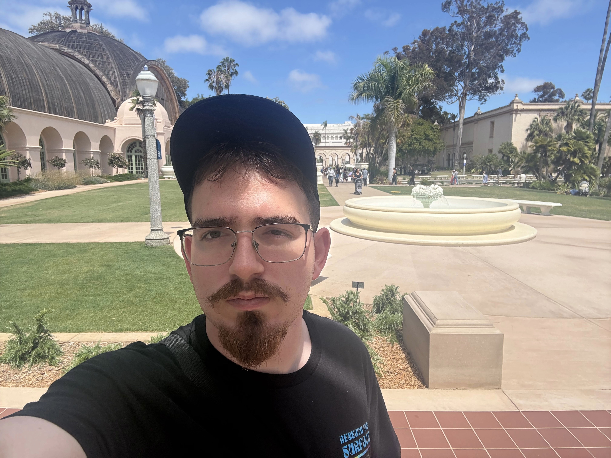

if you are using a screen reader you are on About

Hello, I'm Dmitri! You can refer to me as "Tree" though.
I'm 22 years old, and I am a Computer Science student at the University of California,
San Diego.
I was born in La Mesa, CA, and I've been in San Diego's East County region for my entire life at this point. I'm
hoping to build some things to give back to the city I was born in.
This is a portfolio and resume website, and I'm hoping that many people come here and check out some of the cool
things I've built or am currently working on.
I'm a big fan of the web, as well as games, and some micromobility devices. Because of all of those interests
involving technology, that's why I am so fascinated with the software behind them.
Check out my blog if you want to keep up with me.
You can check me out on LinkedIn, GitHub, or other socials on my home page!